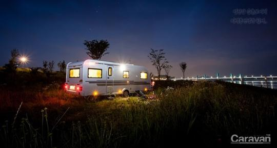
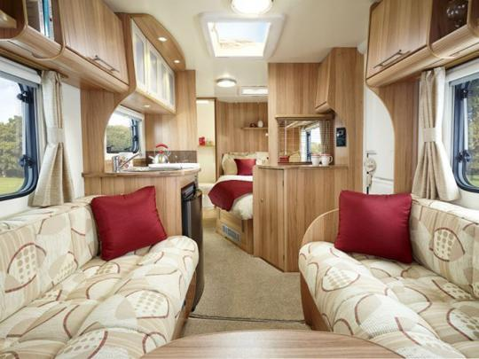
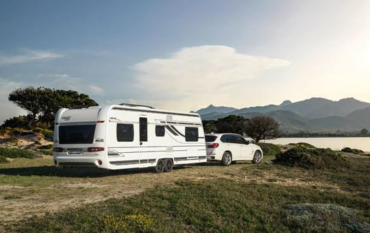
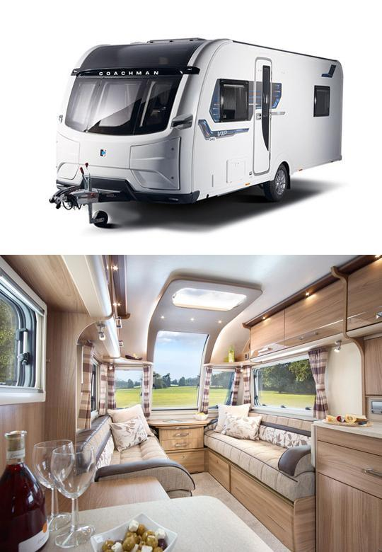
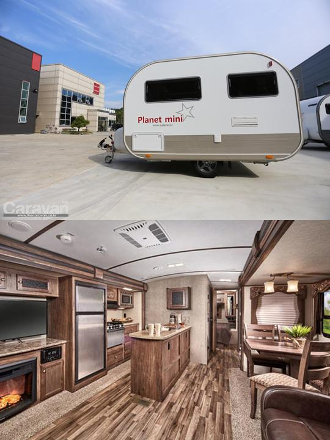
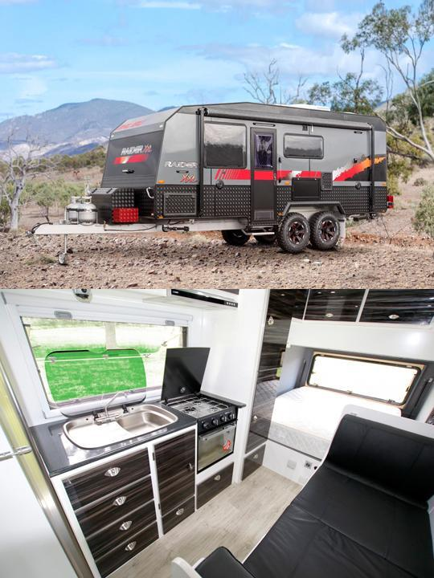
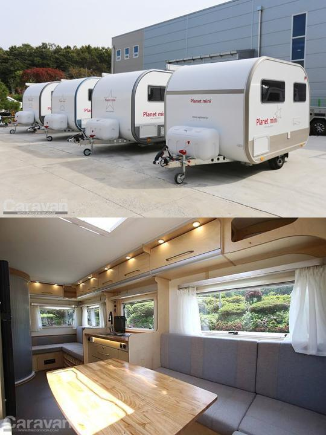

◆ 캠핑카보다 카라반이 더 어울리는 건 어떤 분들일까요?
흔히들 캠핑카는 거주성은 조금 떨어지지만 기동성이 좋은 걸 최대 장점이라고 말합니다. 모터(엔진)가 없어서 견인차에 의해 끌려(?) 다녀야 하는 카라반에 비해 이동이 쉽고 번거롭지 않은 게 사실입니다. 하지만 아직 국내에서 판매되고 있는 캠핑카는 모두 비교적 작은 사이즈들뿐입니다. 몇몇 모델을 제외하고는 대부분 실내 거주공간의 길이가 4미터 수준입니다.
이에 비해 카라반은 기동성면에서는 캠핑카에 비해 떨어지지만 다양한 크기의 실내공간으로 거주성은 월등히 앞서고 있습니다. 카라반은 부부만 다니는 커플형부터 어린 자녀와 함께하는 가족형까지 다양한 사이즈가 준비되어 있습니다. 이런 이유로 30대와 40대의 어린 자녀가 있는 아빠들은 비교적 넓은 실내 길이를 가진 5미터 이상 급의 카라반을 선호하는 경향이 뚜렷합니다.

◆ 우리 가족에게 맞는 카라반은 어떤 스타일일까요?
카라반은 미국, 유럽, 영국, 호주, 한국 등 저마다 뚜렷한 스타일을 가지고 있습니다. 독일과 프랑스를 중심으로 하는 유럽산 카라반과 거리상으로는 가깝지만 확연한 차이를 보여주는 섬나라 영국 카라반, 다른 대륙과는 뚜렷한 차이를 보이는 미국 트레일러, 미국과 유럽 스타일이 혼재하는 호주 카라반, 그리고 새로운 스타일을 찾아가는 국산 카라반까지 차근차근 대륙별 스타일의 차이를 알아보도록 하겠습니다.

◆ 먼저 유럽 카라반입니다
흔히 유럽식이라고도 불리는 유럽 카라반은 한 해 평균 17만 대 가량의 카라반을 생산합니다. 독일과 프랑스를 중심으로 슬로베니아, 스페인, 폴란드, 터키 등지에서 생산합니다.
유럽의 카라반은 소형 승용차가 주를 이루는 유럽의 자동차 문화와 함께 성장하면서 가장 먼저 고려하는 것이 경량화입니다. 소형 승용차로도 쉽게 견인이 가능한 카라반을 만들어야만 소비자의 선택을 받을 수 있는 시장 상황으로 다른 어떤 것보다 카라반의 무게와 전축 하중에 신경을 많이 써서 개발합니다. 서두에서 이야기한 우리나라 30~40대가 가장 선호한다는 실내길이 5미터급 중형 카라반도 공차 중량이 1,000kg~1,500kg 정도에 불과합니다.
성인 남자가 평지에서 밀어서 이동하고 방향을 바꿀 수 있도록 카라반의 앞과 뒤에 손잡이가 마련되어 있을 정도로 경량화를 실현하고 있습니다. 카라반을 견인하기 위해 견인 고리에 가해지는 수직 하중도 승용차량에 적합하도록 경량화 되어 있어 카라반의 바퀴가 최대한 가운데로 위치하고 있어 전축 하중의 무게를 줄여주도록 설계되어 있습니다. 수입 초기에는 우리나라의 도로 규정에 맞지 않는 뒤쪽 오버항(바퀴 중심에서 차량의 끝까지의 거리)으로 편법이 동원되기도 했지만 지금은 규정이 완화되어 수입과 인증이 합법적으로 이루어지고 있습니다.
유럽 카라반의 가장 큰 특징은 가벼움입니다. 그리고 모던한 인테리어를 들 수 있습니다. 가벼움에 대한 이유는 앞에서 설명을 드렸으니 모던한 인테리어 이야기를 해볼까요? 은은한 엠비니언트 라이팅과 조화로운 가구배치, 부드러운 패브릭은 정갈한 호텔의 인테리어를 연상시킵니다. 잘 짜인 레이아웃은 거실과 주방, 샤워실과 침실을 조화롭게 배치하고 냉장고와 가스레인지, 싱크와 수전은 우리가 일상에서 접하는 것들과는 사뭇 다른 이국적인 느낌을 느끼기에 충분합니다. 카라반에 들어오는 순간 다른 문화의 생활공간에 들어오는 기분을 느끼실 수도 있습니다.

◆ 섬나라 영국의 카라반입니다
지리적으로는 프랑스와 독일의 유럽에 속해 있지만 영국은 섬나라 특유의 독특한 그들만의 문화를 녹여낸 카라반을 만들어 내고 있습니다.
커다란 세 개의 전면창과 카라반의 끝부분 전체를 샤워실과 화장실로 꾸민 구조는 우리나라 소비자의 취향을 제대로 저격했습니다. 독일과 프랑스의 유럽 스타일 카라반 보다는 약간은 투박한 느낌이 강하고 세련된 맛은 조금 떨어지지만 나름 모던한 스타일을 유지하고 있습니다. 실상 영국 카라반의 이런 변화는 그리 오래되지 않았습니다. 불과 몇 해 전까지만 해도 투박한 원목에 앤티크 한 가구 디자인으로 뒤에 설명해 드릴 미국의 그것과 일맥상통하는 디자인을 가지고 있었습니다. 카라반 기준 연간 3~4만 대 수준의 시장규모를 가지고 있어 부품의 대량생산을 통한 소재 개발 보다는 목재를 이용한 소재를 많이 채용하고 있습니다.
비가 많이 오는 기후의 영향으로 채광창이 많아 햇살을 받아들이기 좋게 설계되어 있고 야외보다는 실내생활에 부족함이 없도록 신경 쓴 흔적이 역력합니다. 커다란 샤워전용 부스와 큰 솥을 씻을 수 있을 만큼 넉넉한 크기의 싱크 수전, 커다란 소파와 필요에 따라 꺼내 쓸 수 있는 테이블까지 비가 올 때도 실내에서 부족함 없이 지낼 수 있도록 잘 준비되어 있습니다.

◆ 미국 카라반? 미국 트레일러 스타일
미국은 세계 최대의 RV(레저용자동차) 제조국이며 보유국입니다. 2018년 한 해 동안 48만 3천대를 생산했고 현재 900만 대가 넘는 캠핑카와 카라반이 보급된 나라이기도 합니다. 전 세계 시장의 50%를 생산하고 있지만 대부분 내수 시장에서 소비하고 있고 수출 물량이 많지 않은 것이 현실입니다. 유럽과 달리 카라반이라는 표현을 쓰지 않습니다. 캠핑 트레일러 혹은 트레블 트레일러로 부르며 지원시설이 잘 갖춰진 캠핑장과 함께 성장해 가고 있습니다.
유럽이 소형 승용차를 기반으로 하는 견인차에 맞도록 카라반이 발전되어 왔다면 미국은 그들 특유의 픽업트럭 문화와 함께 트레일러 문화가 발전해 왔습니다. 견인력이 여유로운 픽업트럭 덕분에 무게에 대한 부담 없이 트레일러를 개발했고 넓은 국토를 여행하기 위해 장거리 여행과 장시간의 휴가를 즐기기 위한 장기 여행에 특화된 대형 RV들을 개발했습니다.
전통적인 미국의 가정집과 같이 투박하고 앤티크 한 스타일의 나무 가구들과 커다란 버튼들이 미국 트레일러의 큰 특징 중 하나입니다. 시끄럽지만 넉넉한 용량의 에어컨과 가스오븐, 대용량 청수탱크와 오수탱크, 블랙탱크를 갖추고 있고 온수기와 히터가 장착되어 있습니다. 국내에도 꽤 많은 인기를 얻고 있습니다. 하지만 유럽의 카라반과는 달리 견인차량이 제한적일 수밖에 없어 선택에는 제한이 따를 수 있습니다. 먼저 자신의 견인 차량을 고려한 선택이 필요한 스타일입니다.

◆ 호주 카라반, 거친 오프로드를 달린다
호주는 미국 스타일의 트레일러에 오프로드 감성이 더해진 트레일러를 많이 생산합니다. 사실 트레일러나 캠핑카만큼 텐트의 인기가 높은 나라이지만 트레일러도 다양한 형태로 소비되고 있는 나라입니다. 비싼 가격과 비싼 운송료로 인해 국내에는 많이 소개되지는 못했지만 최근 중국의 제조사를 통해 직수입되는 호주식 카라반이 늘어나고 있는 추세입니다. 마초적인 감성을 자극하지만 가족용으로 쓰기에는 적응이 필요합니다.

◆ 대망의 국산 카라반입니다
우리나라에도 카라반을 생산하는 업체와 브랜드가 있습니다. 특수 트레일러와 캠핑 카라반을 함께 생산하는 ‘에어밴’과 국산 카라반의 수준을 한 차원 끌어 올렸다는 ‘플래닛’의 더블유 카라반이 있습니다. 여행 가방 모양의 독특한 디자인으로 사랑받는 가자의 ‘까방’도 빠질 수 없는 국산 카라반중 하나입니다. 독특한 감성으로 국산 카라반 중 가장 많은 판매 대수를 기록하는 카라반은 단연 ‘블루밴’입니다. 캠핑장에서 사용하는 정박형 카라반을 생산하는 업체는 많지만 이렇게 자신만의 브랜드를 키우며 여행용 카라반을 만들어 내는 업체의 약진이 국내 카라반 시장을 든든히 받쳐주고 있습니다. 국산 카라반 시장에서는 위에 소개된 하드탑 스타일의 카라반 이외에도 폴딩 트레일러와 텐트 트레일러가 다양한 모델을 선보이고 있습니다.
국산 카라반의 특징은 나름대로 우리 환경에 맞는 스타일을 찾아가고 있다는 게 정확한 표현일 것 같습니다. 추위에 강하도록 바닥 난방 시스템이나 가스가 아닌 경유를 연료로 하는 무시동 히터 시스템을 채용하는 것도 특징 중의 하나입니다. 아직 차량 총중량에 대한 규제가 없기 때문에 원목합판으로 가구를 제작하는 경우도 있습니다.
여가에 대한 관심이 높아지면서 캠핑카와 카라반에 대한 인기도 높아지고 있습니다. 캠핑카와 카라반을 구입하시려는 분들께 조금이라도 도움이 되는 길라잡이가 될 수 있는 정보가 되기를 희망합니다. 다음 편에서는 더 세부적으로 접근한 국내에서 시판되는 카라반의 브랜드에 대해 이야기 하도록 하겠습니다.